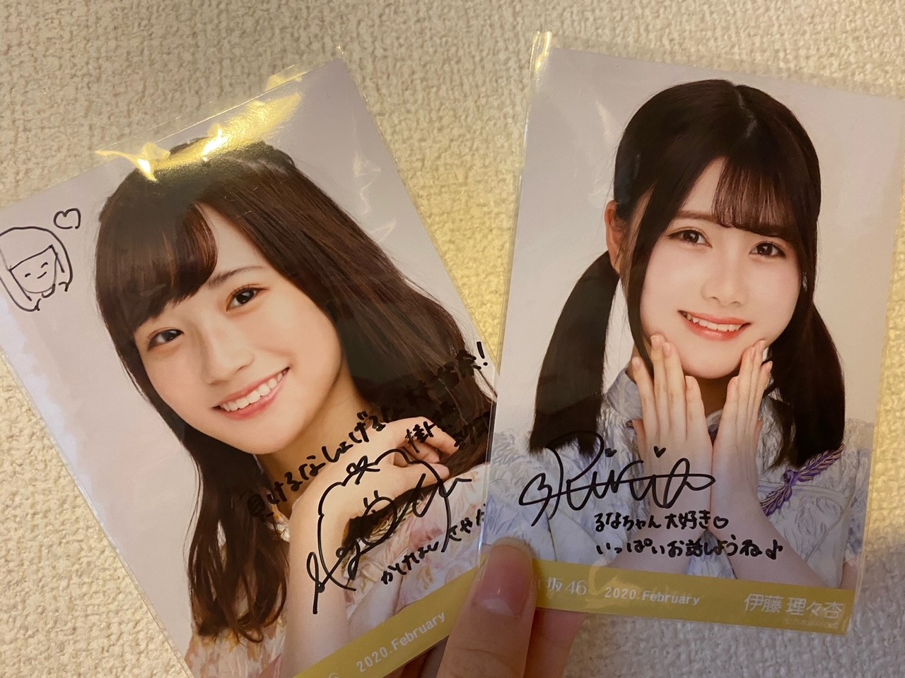

2020/1031Sat皆さん本当にお疲れ様でした！お疲れ様です、林瑠奈です。ハロウィンです！
白石麻衣さん卒業コンサート。
『Mai Shiraishi Graduation Concert ~Always beside you ~』
本当にありがとうございました。
白石麻衣さん。
ご卒業おめでとうございます。
まず、"白石麻衣"さんという字面が大好きで、
もちろん皆さん本当に素敵な名前の方しかいないんですけれども、
わたしが乃木坂46を知るきっかけ
わたしが乃木坂46を好きになったきっかけ
わたしが乃木坂46を友達に薦めたとき
どんな場面でも白石麻衣さんがいらっしゃったなと。
単純に目にする機会が多かったからとか、そういうことではなくて、
何故か"白石さん"よりも"白石麻衣さん"の方がしっくりきます。
何故か"白石さん"よりも"白石麻衣さん"の方がしっくりきます。
アイドルの枠を超えてご活躍なさるお姿も
どんどん磨きがかかるその美しさも
沢山の愛に溢れた内輪で見せる愛嬌のあるお姿も
その全てが、
見ている人たちの心に響いて、生きる希望を与えてくれるのだと、
愛を与えてくれるのだと、
関わらさせていただいた時間は少なかったですが、
その限られたご一緒できる時間で、沢山感じさせていただきました。
初めて先輩方とご一緒するライブ。
リハーサルのときからわたしは緊張し過ぎて、
もはや『緊張』そのものになっていました。
ゲネプロが始まる前、
なおと2人でいたときに白石麻衣さんとすれ違って、
『ご一緒させていただく歌割りのところで、目を合わせてもいいですか？』
と聞くと
「そうだよね！この後のときもやろうよ！」
と本当にお優しく言ってくださって
わたしの心の中は愛の許容量を超えてしまい
愛がぼろぼろと溢れました。
ライブが終わった後、にメンバー全員に向けて言ってくださった、
『これからの乃木坂が楽しみだし、
きっともっともっと大きくなっていくんじゃないかなって思ってます。』
そうなって欲しいとわたしも強く思います。
矮小な自分を成長させてくれた乃木坂46に
少しでも力を注げるよう精進していきます。
白石麻衣さん。
約9年間、3357日。
本当にお疲れ様でした。
今までもこれからも、ずっと大好きです。
一瞬に撮ってくださった写真は宝物にします。

Photo by なお
...........................................................................
本日もお疲れ様です。
乃木坂46、4期生の林瑠奈です。
神奈川県出身高校2年生17歳
華咲くセブンのティーンの林瑠奈です。
負けるなしょげるな林瑠奈、今日も1日頑張るな
(ピンポーン)
38周目となりました、ブログリレー。
今回、初めて先輩方とご一緒させていただいたライブということで沢山思い出があります。
ですが、ここで全て話し切ってしまうのは勿体ない気がするので徐々に話していけたらなと。
写真も色々と撮ったのでまた載せますね。

くろみちゃんの携帯を貸してもらって撮りました。
画質が良いですね

持参していた生写真にサインとメッセージを書いていただきました。
去年の手帳には松村さんの生写真を挟んでいたのですが、今年はこのお二方を挟もうと思います。
ずっとお話ししたいと思っていたりりあさんです！
嬉しいです！
このときのお話も次回します！！
...........................................................................
「ブログのネタになるかな、、」と気を利かせた祖母が送ってくれました。

一緒に撮ろうか迷ったのですが、1年の中でこの方が主役になれるのって今日だけなので、ソロで写っていただきました。
顔を描くべきかなと思ったので、ちゃんと描きましたよ。
かぼちゃん。
...........................................................................
さて亡霊になっている皆さん。
今日は何の日ですか。
前述してある通りハロウィーンなのですが、では1年前の今日は何の日でしょう。
はい、どどーん

無表情ピース
ちょうど1年前の今日の写真です。
どろちゃんです。
研修生ツアー大阪2日目は、『サイレントマジョリティー』から始まりましたね。
『誰よりも高く跳べ！』での音響トラブル、めっちゃ懐かしいです。
15人と会場の皆さんで歌って乗り切ったのが、ツアーでの1番の思い出かなぁ。
後ろのモニターに流れる歌詞と、アカペラのスピードが全くズレていなかったとスタッフさんから聞いて、凄く嬉しかったのを覚えています。
大切でかけがえのない想い出。
あの頃から少しは成長できましたかね、わたし
...........................................................................
明日はミュウちゃんです。
みゆちゃんお疲れ様〜。
アディオス！！！！！！！！！！
かしこ
2020/10/31 16:30
コメント(171)
瑠奈タイム
ハッピーハロウィン
お菓子ちょうだい〜
逆、逆〜
次はクリスマス
何が欲しいかな〜
ハッピーハロウィン
お菓子ちょうだい〜
逆、逆〜
次はクリスマス
何が欲しいかな〜
お久しぶりです。(^^)
まいやんの卒コンを見てました。
「サヨナラの意味」でのまいやんとるなぴのツーショット！
今まではたんなるイルージョンで現実にはあり得ないと思っていましたが、遂に実現してしまいました。
感無量の一言です。
るなぴ、頑張って今後の乃木坂を盛り上げていってださい。期待していますよ。
アディオス！！！
まいやんの卒コンを見てました。
「サヨナラの意味」でのまいやんとるなぴのツーショット！
今まではたんなるイルージョンで現実にはあり得ないと思っていましたが、遂に実現してしまいました。
感無量の一言です。
るなぴ、頑張って今後の乃木坂を盛り上げていってださい。期待していますよ。
アディオス！！！
欅の衣装似合うな！って思ったけど多分肌が白いからパキッとした色が似合うんやねかわいい☺︎命かけるって言ったるなちゃん、応援するしかないって思いました☺️
お疲れ様です！
研修生ツアーなつかしいですね！
欅坂のOvertureから始まりサイレントマジョリティーでしたね！！
でも僕は『誰よりも高く飛べ』これが1番思い出に残ってます！！
るなちゃんのセンター曲！！
音響トラブルでみんながパニックになっていたのにさいごまでアカペラで乗り切ってファンの人もそれに乗って、すごくいい統一感が生まれた感じがしました！！
これからも体には気をつけて頑張ってください！
応援してます！！
カツvictory
研修生ツアーなつかしいですね！
欅坂のOvertureから始まりサイレントマジョリティーでしたね！！
でも僕は『誰よりも高く飛べ』これが1番思い出に残ってます！！
るなちゃんのセンター曲！！
音響トラブルでみんながパニックになっていたのにさいごまでアカペラで乗り切ってファンの人もそれに乗って、すごくいい統一感が生まれた感じがしました！！
これからも体には気をつけて頑張ってください！
応援してます！！
カツvictory
るなぴ更新ありがとー
ライブお疲れ様！
目合わせたのはサヨナラの意味の時かな？
るなぴガチガチに緊張してた印象が残ってる笑
かぼちゃん主役なのに、るなぴの指が主役を食っちゃってるねw
かぼちゃんはこの後スタッフがおいしくいただいたのかな？笑
アディオス！！！！！！！！！！
ライブお疲れ様！
目合わせたのはサヨナラの意味の時かな？
るなぴガチガチに緊張してた印象が残ってる笑
かぼちゃん主役なのに、るなぴの指が主役を食っちゃってるねw
かぼちゃんはこの後スタッフがおいしくいただいたのかな？笑
アディオス！！！！！！！！！！
想いは気持ちと努力で繋げていけると思うので、これからも繋がっていけると良いですね。
(^^)
ハロウィンって、何をするのかよくわかっていませんが、とりあえず今夜の満月は綺麗です。
(^^)
ハロウィンって、何をするのかよくわかっていませんが、とりあえず今夜の満月は綺麗です。
おつかれん
まいやんのライブでハヤシライスが緊張してるのがこっちまで伝わってきたよ！メンバー全員の気持ちが一つになったライブはものすごく感動した！まいやんが見たくてライブに行った2015年のライブから今では、乃木坂の全員が大好きになっていました！そして次のライブでは林のペンライトのピンクを輝かせます！ですが、まいやんのペンライトの色も使わせてもらいます！！
○質問
○林を応援してるのでピンクのペンライトも振りますが、これからも白石さんのペンライトの色も使って大丈夫ですかね？
○林が乃木坂46を好きと感じた瞬間はある？？
○林のライブ前のハプニングや、エピソードはある？？
○乃木坂スキッツに3期生も参加して、更にパワーアップすると思うけど、意気込みをお願いします！！
○質問
○林を応援してるのでピンクのペンライトも振りますが、これからも白石さんのペンライトの色も使って大丈夫ですかね？
○林が乃木坂46を好きと感じた瞬間はある？？
○林のライブ前のハプニングや、エピソードはある？？
○乃木坂スキッツに3期生も参加して、更にパワーアップすると思うけど、意気込みをお願いします！！
かわいい❤️
林ブログ更新ありがとう！
白石麻衣の字面が好きなのマジでわかります！字からして綺麗な人ってわかりますよね！！
まいやんの卒業ライブお疲れ様！！
まいやんとの歌割りの時に林がいてうぉぉぉってなりました。(語彙力)
最後はまいやんらしく笑顔で終われたライブで明るい気持ちになりました！！
これからも乃木坂46を大きくしていっちゃって下さい！！ついていきます！！
亡霊になってるってよくわかったね。でも林のブログで生き返りましたありがとうございます。
サイマジョの衣装だ！1年前だったのか…早いな時の流れって。
質問〇ハロウィンの日は佐藤璃果ちゃんとお話しましたか？？
〇ハロウィンは何をしましたか？？
〇11月になるけど林は七五三しないんですか？？
林にとってより良い日々になりますように！
ゴードンでした！アディオス！！！
白石麻衣の字面が好きなのマジでわかります！字からして綺麗な人ってわかりますよね！！
まいやんの卒業ライブお疲れ様！！
まいやんとの歌割りの時に林がいてうぉぉぉってなりました。(語彙力)
最後はまいやんらしく笑顔で終われたライブで明るい気持ちになりました！！
これからも乃木坂46を大きくしていっちゃって下さい！！ついていきます！！
亡霊になってるってよくわかったね。でも林のブログで生き返りましたありがとうございます。
サイマジョの衣装だ！1年前だったのか…早いな時の流れって。
質問〇ハロウィンの日は佐藤璃果ちゃんとお話しましたか？？
〇ハロウィンは何をしましたか？？
〇11月になるけど林は七五三しないんですか？？
林にとってより良い日々になりますように！
ゴードンでした！アディオス！！！
るなぴ、ブログ更新ありがとう！
ライブ配信お疲れ様でした！
白石さん＋4期生の『夜明けまで強がらなくてもいい』のパフォーマンスの時、るなぴのダンスに目を奪われました。
これからもっと上手くなっていくことを想像すると楽しみで仕方ないです！
全体初めてのライブということでかなり緊張していたと思いますが、そんな事を感じさせないくらい堂々としていてかっこよかったです！
これからもっと乃木坂46を大きくしていくために、ファンも一緒に坂を上っていきます！頑張りましょう！
ファイティン
ライブ配信お疲れ様でした！
白石さん＋4期生の『夜明けまで強がらなくてもいい』のパフォーマンスの時、るなぴのダンスに目を奪われました。
これからもっと上手くなっていくことを想像すると楽しみで仕方ないです！
全体初めてのライブということでかなり緊張していたと思いますが、そんな事を感じさせないくらい堂々としていてかっこよかったです！
これからもっと乃木坂46を大きくしていくために、ファンも一緒に坂を上っていきます！頑張りましょう！
ファイティン
るなち、おひさ。
名は体を表すというけれど、白石麻衣という女性は正にその通りだね。
しかし通称「まいやん」、最初は綺麗な娘なのに「やん」て！と思ったよ。
やんと言えばマダムヤンか男のあだ名に多いからさ。
黒石さんも良かったね。
音響トラブル、音響さんもあせっただろうな。
亡霊は6年前からうちにいるよ。弟だけどね。
因みに28日は月命日さ。
名は体を表すというけれど、白石麻衣という女性は正にその通りだね。
しかし通称「まいやん」、最初は綺麗な娘なのに「やん」て！と思ったよ。
やんと言えばマダムヤンか男のあだ名に多いからさ。
黒石さんも良かったね。
音響トラブル、音響さんもあせっただろうな。
亡霊は6年前からうちにいるよ。弟だけどね。
因みに28日は月命日さ。
こんばんは。ブログ更新ありがとうございます。
まいやんの卒コン、お疲れ様でしたー。私は時間が合わず、残念ながら見られませんでした。円盤化、もしくはのぎ動画で見たいです。東京ドームは残念でしたが、結果的に68万ものファンが視聴できたので、これで良かったのかな？とも思います。
昨年の今頃は研修生ツアーだったのですね。あの当時は研修生全員で新たな坂道グループができるのかな？なんてことも思っていました。研修生時代も立派な歴史ですね。
ではまた。
まいやんの卒コン、お疲れ様でしたー。私は時間が合わず、残念ながら見られませんでした。円盤化、もしくはのぎ動画で見たいです。東京ドームは残念でしたが、結果的に68万ものファンが視聴できたので、これで良かったのかな？とも思います。
昨年の今頃は研修生ツアーだったのですね。あの当時は研修生全員で新たな坂道グループができるのかな？なんてことも思っていました。研修生時代も立派な歴史ですね。
ではまた。
林瑠奈好きやで！
機材トラブルの時、２階から一緒に歌ってました。
あの日、あの時に居た事が史上最高の思い出です！！
あの感動は、一生忘れません！！
林は生き方がカッコイイよね！
同じく堀ちゃん推しなので、一緒に堀ちゃんの活躍をみていこうね！笑
質問：ピザのトッピングで好きな食材はある？？
あの日、あの時に居た事が史上最高の思い出です！！
あの感動は、一生忘れません！！
林は生き方がカッコイイよね！
同じく堀ちゃん推しなので、一緒に堀ちゃんの活躍をみていこうね！笑
質問：ピザのトッピングで好きな食材はある？？
白鳥が羽搏いた水面に残された波紋の様に穏やかに今は唯、卒業ライブの余韻嫋嫋とするばかり。去り行くエースと交錯する様に、るなぴ達にとって初となる全体ライブは新たな幕開けを告げるかの如く象徴的です。後を託された言葉に応えられるのを応援しています。まいやんの未来に幸多からんことを。
生写真にサインとメッセージとはメンバー特典ってところで嬉しいですね♪
和まされるかぼちゃんカットありがとう。お祖母さんの心遣いに感謝します。Happy Halloween.
生写真にサインとメッセージとはメンバー特典ってところで嬉しいですね♪
和まされるかぼちゃんカットありがとう。お祖母さんの心遣いに感謝します。Happy Halloween.
こんばんぴ
白石さん卒コン感動的でした！
白石さん名前も美しいですよね！
そして凄く格好良い存在でした♪
ずっとグループ牽引してましたが、
グループ更に成長して欲しいです☆
なおちゃん撮り微笑ましいですし、
くろみん撮りの笑顔も素敵ですよ✨
サイン&メッセージ嬉しいですね！
かぼちゃん写真も嬉しくなります◎
無表情ピース写真も凛々しいけど、
るなぴもとっても成長しましたよ✌
アディオ～ス☺
白石さん卒コン感動的でした！
白石さん名前も美しいですよね！
そして凄く格好良い存在でした♪
ずっとグループ牽引してましたが、
グループ更に成長して欲しいです☆
なおちゃん撮り微笑ましいですし、
くろみん撮りの笑顔も素敵ですよ✨
サイン&メッセージ嬉しいですね！
かぼちゃん写真も嬉しくなります◎
無表情ピース写真も凛々しいけど、
るなぴもとっても成長しましたよ✌
アディオ～ス☺
かぼちゃん
かわいいっ！！
俺はジャック
オーランタンの
天ぷらを作りました♪


かわいいっ！！
俺はジャック
オーランタンの
天ぷらを作りました♪
更新ありがとう！
私は今日中学校生活最後の体育祭で、今日は瑠奈ちゃんのブログ更新の日だから頑張ろう！と思いながら色々な競技に参加したよ！個人種目では一位とったよ！褒めて！笑
ライブお疲れ様でした！私は用事があったのでみれなかった泣でも、まいやんと同じステージに立つことができた瑠奈ちゃんは幸せ者なんだろうなと思ったよ！すごくうらやましい！
質問！
・まいやんを初めてみたときに思ったことは何ですか？
・体育祭で思い出に残っている出来事は何ですか？
・毎日元気になれるような面白い言葉を教えて下さい！
サイマジョの衣装似合ってるね！めっちゃかわいい！
私は今日中学校生活最後の体育祭で、今日は瑠奈ちゃんのブログ更新の日だから頑張ろう！と思いながら色々な競技に参加したよ！個人種目では一位とったよ！褒めて！笑
ライブお疲れ様でした！私は用事があったのでみれなかった泣でも、まいやんと同じステージに立つことができた瑠奈ちゃんは幸せ者なんだろうなと思ったよ！すごくうらやましい！
質問！
・まいやんを初めてみたときに思ったことは何ですか？
・体育祭で思い出に残っている出来事は何ですか？
・毎日元気になれるような面白い言葉を教えて下さい！
サイマジョの衣装似合ってるね！めっちゃかわいい！
るんちゃん！
やっほー！
ひろき(Yandji)です☺️
ブログ更新ありがとー！！！
質問タイムー！！！
いまメンバー間で流行ってることとかある？
また、コメントするね！
では、またねー！
ひろき(Yandji)より
はーーーーーーーい！！！！！！！(大声)(誰よりもデカい声)
あ、すいませんお疲れ様ですたいやきです。
亡霊って呼ばれた気がしたので素で返事しちゃいました。
卒業コンサートお疲れ様です。バイトで見れんかったけど楽しめたなら良かったです。
はい。ツアーから1年経ちました。忘れもしないあの風景。昨日のことみたいだな~っていつも思います。あっという間だね1年。もうほんとに亡霊です。いや今も瑠奈ちゃん居るんだけど、ちょっと違くて。あの15人の亡霊です。まあそらそうか笑
公表されてからはあっという間の短期間だったけど、それまでが長かったから、その長い間を我慢してきた耐え抜いてきた坂研のオタク、メンバーが大好きだった。すごい幸せな時間を共有出来てたから。だから15人の亡霊なんだなって思います。あー！坂道研修生東名阪ツアーほんとーーーに楽しかったー！！！！！寂しい！！！！！本当に寂しい！！！！！！あの近さ、あの空気が特殊すぎて好きすぎて泣きそう！！！！！！！本当に好き！！！！！瑠奈ちゃんもみんなも！！！
定期的に坂研の話とか挟んでくれると嬉しいです。人間の記憶には限界あるしどれだけ楽しくたって思い入れがあったっていつかは薄れてくだろうから定期的に話が聞きたいなあって思います。まあずっと覚えてるんですけどね。瑠奈ちゃんの泣き顔とか特に。
きらるな供給ありがとうございます。最近きらるな足りんかったので嬉しいです。こっちも亡霊です。きらまりとか掛林とかるなりかメインになってきて寂しくなってました。タイミング神よ瑠奈ちゃん。天才だよ。397
大阪2日目、参戦できてないの今でも悔しいよ~しょうがないけどさ~！！！ついった見てて誰跳べハプニングって聞いてめちゃくちゃ心配したのがいい思い出です。あの場所に居合わせたかった…。
瑠奈ちゃんは凄い成長してるよ。これは満場一致です。だから安心して欲しいな~。もやしちゃん時代から今まで、立派だよ。本当に誇らしい推しメンだよ。嬉しいです。なんかわからんけど嬉しいです。ありがとう。
そいじゃこの辺で。また5日後な~！
アディオス！！！！！！
あっ、5日後Tさんの誕生日らしいです。
ほな。
あ、すいませんお疲れ様ですたいやきです。
亡霊って呼ばれた気がしたので素で返事しちゃいました。
卒業コンサートお疲れ様です。バイトで見れんかったけど楽しめたなら良かったです。
はい。ツアーから1年経ちました。忘れもしないあの風景。昨日のことみたいだな~っていつも思います。あっという間だね1年。もうほんとに亡霊です。いや今も瑠奈ちゃん居るんだけど、ちょっと違くて。あの15人の亡霊です。まあそらそうか笑
公表されてからはあっという間の短期間だったけど、それまでが長かったから、その長い間を我慢してきた耐え抜いてきた坂研のオタク、メンバーが大好きだった。すごい幸せな時間を共有出来てたから。だから15人の亡霊なんだなって思います。あー！坂道研修生東名阪ツアーほんとーーーに楽しかったー！！！！！寂しい！！！！！本当に寂しい！！！！！！あの近さ、あの空気が特殊すぎて好きすぎて泣きそう！！！！！！！本当に好き！！！！！瑠奈ちゃんもみんなも！！！
定期的に坂研の話とか挟んでくれると嬉しいです。人間の記憶には限界あるしどれだけ楽しくたって思い入れがあったっていつかは薄れてくだろうから定期的に話が聞きたいなあって思います。まあずっと覚えてるんですけどね。瑠奈ちゃんの泣き顔とか特に。
きらるな供給ありがとうございます。最近きらるな足りんかったので嬉しいです。こっちも亡霊です。きらまりとか掛林とかるなりかメインになってきて寂しくなってました。タイミング神よ瑠奈ちゃん。天才だよ。397
大阪2日目、参戦できてないの今でも悔しいよ~しょうがないけどさ~！！！ついった見てて誰跳べハプニングって聞いてめちゃくちゃ心配したのがいい思い出です。あの場所に居合わせたかった…。
瑠奈ちゃんは凄い成長してるよ。これは満場一致です。だから安心して欲しいな~。もやしちゃん時代から今まで、立派だよ。本当に誇らしい推しメンだよ。嬉しいです。なんかわからんけど嬉しいです。ありがとう。
そいじゃこの辺で。また5日後な~！
アディオス！！！！！！
あっ、5日後Tさんの誕生日らしいです。
ほな。
ブログ更新ありがとう！
お疲れ様です。
とても感動しました！
サイン入り生写真、家宝になりますね！
質問です！
ハロウィンにやってみたい仮装は？
私は、今ワープロ検定という資格の勉強をしています。
るなぴはワープロ検定を知ってますか？
答えてくれたらうれしいです！
かぼちゃんかわいい！
一年前は研修生ツアーでしたね！
私は、高校の受験が近づいてきていたので、家から、全力のエールを送ってました！
ますもと、るなぴコンビ大好き！
お体に気を付けてお過ごしください。
また書き込むねー！
またねー！
お疲れ様です。
とても感動しました！
サイン入り生写真、家宝になりますね！
質問です！
ハロウィンにやってみたい仮装は？
私は、今ワープロ検定という資格の勉強をしています。
るなぴはワープロ検定を知ってますか？
答えてくれたらうれしいです！
かぼちゃんかわいい！
一年前は研修生ツアーでしたね！
私は、高校の受験が近づいてきていたので、家から、全力のエールを送ってました！
ますもと、るなぴコンビ大好き！
お体に気を付けてお過ごしください。
また書き込むねー！
またねー！
研修生時代の写真ありがとう
るなぴブログ更新ありがとうー
まいやんの卒コンはほんと最高でした！
まいやんの卒コンはほんと最高でした！
るなちゃーん！まいやんの卒コン見たよ！サヨナラの意味の時にるなちゃんとあやめちゃんとまいやんが並んでた時、なんかすごい嬉しかった〜
あと、るなちゃんの笑顔が前の音楽番組の時より増えててちょっとリラックス出来てるのかなって思って安心しました！ りりあんと何話したんだろ…。早くその話聞きたいな〜 次のブログも楽しみにしてます！
あと、るなちゃんの笑顔が前の音楽番組の時より増えててちょっとリラックス出来てるのかなって思って安心しました！ りりあんと何話したんだろ…。早くその話聞きたいな〜 次のブログも楽しみにしてます！
瑠奈ちゃん、 こんばんは！
ジェスチャーで歩くニワトリとかダチョウのモノマネとかあるじゃないですか！今日液晶テレビ消したら、暗い鏡みたいに自分姿が映ってて無性にダチョウのマネしたくなってTVの前でポーズを取ってみたんですが、どうも似てなくて難しいなと思いました。ハッピーハロウィン！
おやすみ
ジェスチャーで歩くニワトリとかダチョウのモノマネとかあるじゃないですか！今日液晶テレビ消したら、暗い鏡みたいに自分姿が映ってて無性にダチョウのマネしたくなってTVの前でポーズを取ってみたんですが、どうも似てなくて難しいなと思いました。ハッピーハロウィン！
おやすみ
お疲れ様です！
白石麻衣卒業コンサート見ました！不具合で林ちゃん含めた高校生メンバーが最後まで出れなかったことが残念だったけどまいやんとの演出とてもよかったです！
研修生ツアーから1年たち来年の今がもう楽しみです！
これからも頑張ってください！
白石麻衣卒業コンサート見ました！不具合で林ちゃん含めた高校生メンバーが最後まで出れなかったことが残念だったけどまいやんとの演出とてもよかったです！
研修生ツアーから1年たち来年の今がもう楽しみです！
これからも頑張ってください！
ブログ更新ありがとうございます〜
ハロウィンなのでコスプレの写真くるかと思ったら可愛い画像きましたね！！(やったー)
ありがとう〜
アディオス！！
ハロウィンなのでコスプレの写真くるかと思ったら可愛い画像きましたね！！(やったー)
ありがとう〜
アディオス！！
やっ 

負けるなしょげるな林瑠奈

どーやら…負けるなしょげるな林瑠奈を好きなよーだ
良いかな？答えは聞いてない
負けるなしょげるな林瑠奈だいすこー
負けるなしょげるな林瑠奈
どーやら…負けるなしょげるな林瑠奈を好きなよーだ
良いかな？答えは聞いてない
負けるなしょげるな林瑠奈だいすこー
前略
白石麻衣さん
卒業してしまいましたね！
白石麻衣さんがきっかけで、
乃木坂ファンになった方も
多いと思います。
私もその一人でした。
握手会にも何度かおじゃましましたが、
まさに女神様でした。
はやしるなちゃんの熱い思い
よく伝わりました。
ライブお疲れさまでした。
はやしるなちゃんも
しっかり見つけましたよ。
最後まで出演できなかったのは
ちょっと残念でしたが。
早々
白石麻衣さん
卒業してしまいましたね！
白石麻衣さんがきっかけで、
乃木坂ファンになった方も
多いと思います。
私もその一人でした。
握手会にも何度かおじゃましましたが、
まさに女神様でした。
はやしるなちゃんの熱い思い
よく伝わりました。
ライブお疲れさまでした。
はやしるなちゃんも
しっかり見つけましたよ。
最後まで出演できなかったのは
ちょっと残念でしたが。
早々
ライブお疲れ様でした。
白石麻衣やんと二人になるところで、めちゃくちゃ緊張が伝わりました。憧れるような先輩の隣に並べて良かったね。
ライブ最高でした！！
白石麻衣やんと二人になるところで、めちゃくちゃ緊張が伝わりました。憧れるような先輩の隣に並べて良かったね。
ライブ最高でした！！
るなちゃん、ブログ更新ありがとう！
白石さん、本当にありがとうごさいました。
私もるなちゃんと同じで、白石さんのおかげで乃木坂に出会うことができ、好きになることができました。
白石さんのおかげでるなちゃんに出会うことができました。
お顔が綺麗なのは言うまでもなく、メンバーのみなさんが口を揃えて人柄を好いていることから、本当にいろいろな面で人を魅了するものをお持ちでありました。
諸先輩方が乃木坂で築いてきたものを、残ったメンバーで受け継ぎ、さらに開いていく、そしてみなさんが「乃木坂でよかった」という乃木坂であり続けてほしいです。
るなちゃんと白石さんが一緒に歌うシーンに胸を打たれました。
るなちゃんを始め、4期生のみなさんの表情を見ると、おこがましいですが「ああ、これからの乃木坂も大丈夫だな」とひしひしと感じました。
るなちゃんの感想も少しずつ拝見できればと思います。
そしてあの伝説の日から早1年が過ぎたのですね。
私は10/30の初日に参加したのですが、あの日は本当に衝撃でした。
もちろんShowroomや自己紹介動画の時点でるなちゃんに釘付けだったのですが、あの日のパフォーマンス、言葉を聞いて、私はるなちゃんを応援しようと強く決心しました。
「かわいい女の子が見たい」という理由でもオーディションを受けてくれてありがとうございます。
るなちゃんの決心のおかげで私の人生が彩られています。
本当にありがとうごさいます。
少しずつ最高気温が落ち着いてきました。
本格的に冬に向けての準備をし始める時が近づいてきています。
体調に気を付けてお過ごしください。
それでは、アディオス！！！！！
かしこ
白石さん、本当にありがとうごさいました。
私もるなちゃんと同じで、白石さんのおかげで乃木坂に出会うことができ、好きになることができました。
白石さんのおかげでるなちゃんに出会うことができました。
お顔が綺麗なのは言うまでもなく、メンバーのみなさんが口を揃えて人柄を好いていることから、本当にいろいろな面で人を魅了するものをお持ちでありました。
諸先輩方が乃木坂で築いてきたものを、残ったメンバーで受け継ぎ、さらに開いていく、そしてみなさんが「乃木坂でよかった」という乃木坂であり続けてほしいです。
るなちゃんと白石さんが一緒に歌うシーンに胸を打たれました。
るなちゃんを始め、4期生のみなさんの表情を見ると、おこがましいですが「ああ、これからの乃木坂も大丈夫だな」とひしひしと感じました。
るなちゃんの感想も少しずつ拝見できればと思います。
そしてあの伝説の日から早1年が過ぎたのですね。
私は10/30の初日に参加したのですが、あの日は本当に衝撃でした。
もちろんShowroomや自己紹介動画の時点でるなちゃんに釘付けだったのですが、あの日のパフォーマンス、言葉を聞いて、私はるなちゃんを応援しようと強く決心しました。
「かわいい女の子が見たい」という理由でもオーディションを受けてくれてありがとうございます。
るなちゃんの決心のおかげで私の人生が彩られています。
本当にありがとうごさいます。
少しずつ最高気温が落ち着いてきました。
本格的に冬に向けての準備をし始める時が近づいてきています。
体調に気を付けてお過ごしください。
それでは、アディオス！！！！！
かしこ
見事な無表情(笑)ヽ(￣▽￣)ノ天晴れ(笑)ヽ(￣▽￣)ノ
こんばんは〜
まいやんロスが今後1ヶ月くらい続きそうです。笑
夜明けで写ったるなぴかっこよかったよ！
質問です↓
ユニット曲を出したいメンバーはいますか？
またブログ遊び行きます！
まいやんロスが今後1ヶ月くらい続きそうです。笑
夜明けで写ったるなぴかっこよかったよ！
質問です↓
ユニット曲を出したいメンバーはいますか？
またブログ遊び行きます！
ついに本人直筆入りの
理々杏ちゃんのお写真GETだね。
まもなく「どんぶり委員会」の
第２話だけど理々杏ちゃんの
出演に期待だね。
理々杏ちゃんのお写真GETだね。
まもなく「どんぶり委員会」の
第２話だけど理々杏ちゃんの
出演に期待だね。
るなぴこんばんは！！
お疲れ様です！！
まいやんの卒コンお疲れ様でした！！
るなぴのパフォーマンスめちゃくちゃよかったよ！！
今日はハロウィンやね！！
何もハロウィンらしい事してないや（笑）
これからもるなぴのこと応援しています(*^^*)！！
お疲れ様です！！
まいやんの卒コンお疲れ様でした！！
るなぴのパフォーマンスめちゃくちゃよかったよ！！
今日はハロウィンやね！！
何もハロウィンらしい事してないや（笑）
これからもるなぴのこと応援しています(*^^*)！！
ウィィィィィーーーー！！！！
コメント失礼いたします。
研修生ツアーの大阪公演2日目からちょうど一年ですか。。
そんな日にブログリレーの順番が回ってきて、運命のようにも感じますね。
坂道研修生としてはやしがセンターを務めた『誰跳べ』での音響トラブル。
びっくりしましたが、無音でもアカペラでパフォーマンスし続ける皆さんの気合いを感じて、これは後押しをしないと！と思いました。応援したい気持ちが伝わっていたら嬉しいです。
自己紹介コーナーで、緊張してムスっとしたお顔になっていたのも懐かしいですね(^^)
各番組でもご活躍を拝見していますが、間違いなく成長されていると思いますよ。僕もはやしを見習ってがんばります！
また、先日のまいやんの卒コンおつかれさまでした♫
これについても書きたいのですが、ここまで長くなりましたし、コメントの内容がブレてきそうなのでこの辺りにしておきます(>_<)
いつもブログ更新ありがとう！
アディオス！！！！！
研修生ツアーの大阪公演2日目からちょうど一年ですか。。
そんな日にブログリレーの順番が回ってきて、運命のようにも感じますね。
坂道研修生としてはやしがセンターを務めた『誰跳べ』での音響トラブル。
びっくりしましたが、無音でもアカペラでパフォーマンスし続ける皆さんの気合いを感じて、これは後押しをしないと！と思いました。応援したい気持ちが伝わっていたら嬉しいです。
自己紹介コーナーで、緊張してムスっとしたお顔になっていたのも懐かしいですね(^^)
各番組でもご活躍を拝見していますが、間違いなく成長されていると思いますよ。僕もはやしを見習ってがんばります！
また、先日のまいやんの卒コンおつかれさまでした♫
これについても書きたいのですが、ここまで長くなりましたし、コメントの内容がブレてきそうなのでこの辺りにしておきます(>_<)
いつもブログ更新ありがとう！
アディオス！！！！！
瑠奈ちゃんブログ更新ありがとう！
瑠奈ちゃんと同じ高校2年生の愛知の覇王です！
さくらちゃんとあやめちゃんと楓さんと同じ愛知県出身だよ！
白石麻衣さんの卒業コンサートお疲れ様！
最初からずっと涙が出て、止まらなかったよ！
感動がたくさんつまった素晴らしいライブだったよ！
さぁちゃんと理々杏ちゃんからサインもらえて良かったね！
これからもずっと応援するので、頑張ってください！
瑠奈ちゃんと同じ高校2年生の愛知の覇王です！
さくらちゃんとあやめちゃんと楓さんと同じ愛知県出身だよ！
白石麻衣さんの卒業コンサートお疲れ様！
最初からずっと涙が出て、止まらなかったよ！
感動がたくさんつまった素晴らしいライブだったよ！
さぁちゃんと理々杏ちゃんからサインもらえて良かったね！
これからもずっと応援するので、頑張ってください！
こんばんは。
グループの先輩方とは初めてのコンサートになるのでしょうか？
おつかれさまでした。
その経験がかならずるなさんの今後の活動の糧になると
思っていルナ！
また たからものが増えましたね。
わたしは「林瑠奈」という字面もとてもステキだと思いますし、大好きです。
おばあさま お優しいかたでですね。
カボチャさん 冬至の日にも主役になります。
風邪の予防になるそうです。
るなさんもカボチャを食べて 風邪などひかぬよう。
今後の活動をたのしみにみていルナ！
グループの先輩方とは初めてのコンサートになるのでしょうか？
おつかれさまでした。
その経験がかならずるなさんの今後の活動の糧になると
思っていルナ！
また たからものが増えましたね。
わたしは「林瑠奈」という字面もとてもステキだと思いますし、大好きです。
おばあさま お優しいかたでですね。
カボチャさん 冬至の日にも主役になります。
風邪の予防になるそうです。
るなさんもカボチャを食べて 風邪などひかぬよう。
今後の活動をたのしみにみていルナ！
貴重な緊張体験でしたね☆
いい記憶しか、本当の力にはなってくれない
かもしれませんね
いい記憶しか、本当の力にはなってくれない
かもしれませんね
これからも応援してます！！
お疲れさまです！三色丼です！
確かに「白石麻衣(さん)」のネーム力は半端ないですね。日本のアイドル界を牽引してきたといっても過言ではありません。それくらい、アイドル力も人間力も素晴らしかったと思います。本当に偉大な先輩と活動ができて、良かったですね。
増本×林×サイレントマジョリティーも破壊力抜群ですね(^^)b 混ぜるな危険。的な相乗効果がオーラを強くしている感じです。伝わらなかったら、すいませんm(_ _)m
明日は～のくだりがシンプルになってきましたね？
アフターハロウィン…。
アディオス！
確かに「白石麻衣(さん)」のネーム力は半端ないですね。日本のアイドル界を牽引してきたといっても過言ではありません。それくらい、アイドル力も人間力も素晴らしかったと思います。本当に偉大な先輩と活動ができて、良かったですね。
増本×林×サイレントマジョリティーも破壊力抜群ですね(^^)b 混ぜるな危険。的な相乗効果がオーラを強くしている感じです。伝わらなかったら、すいませんm(_ _)m
明日は～のくだりがシンプルになってきましたね？
アフターハロウィン…。
アディオス！
るなぴ、こんばんは(^o^)/
今回はいつもの華咲くセブンのティーンの林瑠奈です。
負けるなしょげるな林瑠奈、今日も1日頑張るな
(ピンポーン)
が無いのかと思ったよ
これが無いとるなぴのブログな感じしがしない
初めての先輩と一緒のライブがまいやんの卒業コンサートなんてどんな気持ちなのか想像も着かないけど、忘れられない思い出になったのは間違いないですね
まいやんのパネル？と撮った写真ちっちゃ
りりあんとさぁちゃんの生写真だ
メッセージとサイン良いなあ
ミニカボチャのかぼちゃん…ジャックオーランタンにはしなかったんだね
『質問』
乃木坂のまいやんのセンター曲(Wセンター含む)で好きな曲は何ですか？
るなぴは猫舌ですか？
クッキーとビスケットはどっちが好きですか？
今回はいつもの華咲くセブンのティーンの林瑠奈です。
負けるなしょげるな林瑠奈、今日も1日頑張るな
(ピンポーン)
が無いのかと思ったよ
これが無いとるなぴのブログな感じしがしない
初めての先輩と一緒のライブがまいやんの卒業コンサートなんてどんな気持ちなのか想像も着かないけど、忘れられない思い出になったのは間違いないですね
まいやんのパネル？と撮った写真ちっちゃ
りりあんとさぁちゃんの生写真だ
メッセージとサイン良いなあ
ミニカボチャのかぼちゃん…ジャックオーランタンにはしなかったんだね
『質問』
乃木坂のまいやんのセンター曲(Wセンター含む)で好きな曲は何ですか？
るなぴは猫舌ですか？
クッキーとビスケットはどっちが好きですか？
NIKEのスニーカー可愛い。似合ってる。
こんばんは！ライブお疲れ様でした！
白石麻衣って、名は体を表すかのように本当にその名の通りに、真っ白で美しく、誰からも憧れられる人！
まいやん、本当に寂しいけど、何よりも感謝の気持ちでいっぱいです。
これからの乃木坂も楽しみで仕方ありません！
ーーーーーーーーーーーーーーーーーーーーー
Happy Halloween！！
そうです！まいやんの卒コンからずっと亡霊です。
かぼちゃん、今後もるなぴをよろしくね！
祖母るなぴもありがとうございました！
かぼちゃん、真顔なのがやっぱり怖いね！！
アディオス！
白石麻衣って、名は体を表すかのように本当にその名の通りに、真っ白で美しく、誰からも憧れられる人！
まいやん、本当に寂しいけど、何よりも感謝の気持ちでいっぱいです。
これからの乃木坂も楽しみで仕方ありません！
ーーーーーーーーーーーーーーーーーーーーー
Happy Halloween！！
そうです！まいやんの卒コンからずっと亡霊です。
かぼちゃん、今後もるなぴをよろしくね！
祖母るなぴもありがとうございました！
かぼちゃん、真顔なのがやっぱり怖いね！！
アディオス！
乃木坂に入ってとても素敵で充実した時間を過ごしていますね。羨ましく思います。一期生の絆、素敵でしたね。運命により同じ時期に集まり共に過ごしたメンバーの絆。新四期生にもそんな運命を感じます。新四期生の絆、大切にしてください。
林瑠奈ちゃん こんにちは
ブログ更新ありがとうございます。
まいやんの卒コン、おつかれさまでした。初めての先輩方とのライブ、その緊張感とまいやん愛に溢れたブログ、痛いほど伝わってきます。愛の許容量を超えたところ、この表現はさすがですね。生写真にサインなんて、もはや完全なファン目線、うらやましい限りです。
これからもっともっとたくさんのライブができることを強く望んでいます。もちろん、まいやんはいませんが‥‥。
さて、気が付けば、もう１１月ですよ。早い。さらに健康管理に気をつけ、これからの季節を乗り切ってくださね。
ブログ更新ありがとうございます。
まいやんの卒コン、おつかれさまでした。初めての先輩方とのライブ、その緊張感とまいやん愛に溢れたブログ、痛いほど伝わってきます。愛の許容量を超えたところ、この表現はさすがですね。生写真にサインなんて、もはや完全なファン目線、うらやましい限りです。
これからもっともっとたくさんのライブができることを強く望んでいます。もちろん、まいやんはいませんが‥‥。
さて、気が付けば、もう１１月ですよ。早い。さらに健康管理に気をつけ、これからの季節を乗り切ってくださね。
るなぴを見て
美少女っているんだな
あっ､いるんだな？
って思いました。
しかも同じ三文字だし…
美少女
るなぴ


美少女っているんだな
あっ､いるんだな？
って思いました。
しかも同じ三文字だし…
美少女
るなぴ
コメントする

PROFILE
新4期生リレー
202104
| SUN | MON | TUE | WED | THU | FRI | SAT |
|---|---|---|---|---|---|---|
| 1 | 2 | 3 | ||||
| 4 | 5 | 6 | 7 | 8 | 9 | 10 |
| 11 | 12 | 13 | 14 | 15 | 16 | 17 |
| 18 | 19 | 20 | 21 | 22 | 23 | 24 |
| 25 | 26 | 27 | 28 | 29 | 30 | |

白石さんのアイドル時代を一緒に過ごした最後の世代としてこれからも乃木坂の発展の為に頑張ってください！
全力で応援してます